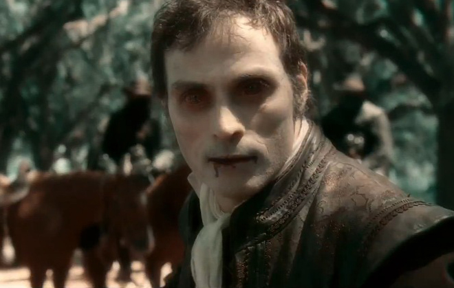
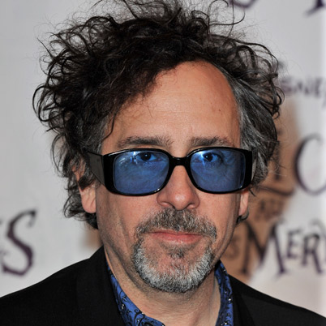
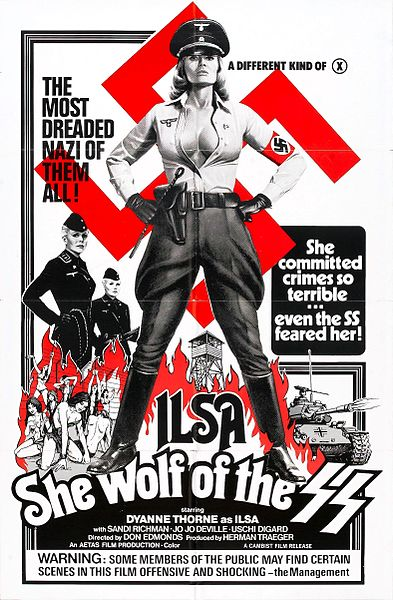

|
Abraham Lincoln: Vampire Hunter is not racist, per se. No hatred is palpable.
Abraham Lincoln's abolitionism is his heroism, and it's made literal as he uses his
|

Adam (Rufus Sewell), the central villain
of Abraham Lincoln: Vampire Hunter
|
gun-powder-packed axe to off slave-owning vampires in this historical fantasy from the
mind of Seth Grahame-Smith (author of Pride and Prejudice and Zombies). Early on,
we see a young black kid separated from his slave family and then nearly get beaten to
death because of the color of his skin. Abe adopts him as a friend for life, much to the
benefit of both. To watch this film is to root for Abe is to root for the dignity of the
lives of slaves.
And yet, there is something tasteless about an alternate history suggesting that
vampires had some stake in the Confederate side of the Civil War. Head vamp in charge Adam
(Rufus Sewell) is a slave owner who pledges to the South, "You'll have as many as my kind
as you need." Is the idea of white supremacy and its ensuing evil too immense that the
non-black men in charge of this thing--screenwriter/novelist Grahame-Smith, director Timur
Bekmambetov, producer Tim Burton--need to inject fantasy to help explain how it drove a
segment of the country to treating other humans as possessions? Maybe it's white guilt,
maybe it's the Russian-Kazakh Bekmambetov's disinterest in American culture, maybe it's
|

Tim Burton, who produced Abraham Lincoln: Vampire
Hunter
|
ignorance. Who knows.
Adam's philosophy doesn't help matters. He suggests to Abe (Benjamin Walker), "We're
all slaves to some things. I to eternity. You to your convictions. Others to the color of
their skin." Except being a vampire or extremely moral is vastly different from being
yoked and forced to forfeit one's life for the opulence of another's.
Adam's a bad guy and we can't trust him, but his words are meant to make us think. Good
luck with that. This story doesn't serve to make sense of slavery, but to make nonsense of
it. Time's Lev Grossman put it well in his 2010 review of Grahame-Smith's novel of the
same name:
Once the connection is made, it feels obvious, and neither slavery nor vampirism
reveals anything in particular about the other. One could imagine a richer, subtler
treatment of the subject, in which the two horrors multiply each other rather than cancel
each other out. The institution of slavery revealed something about the true face of young
America, something unspeakable, but literalizing it in the form of a vampire turns out to
not get us any closer to understanding what it is.
Via narration, the film half-heartedly muses about history preferring "legends to men"
|

Ilsa: She-Wolf of the SS was a failure
at the box office, but is now regarded as a cult classic
|
and how the nation "shall only remember a fraction of the truth." "Vampires are not the
only things that live forever," says Lincoln on his way to getting shot by John
Wilkes-Booth. None of this is illuminating; all of it is pretentious.
It's hard to say, then, just what the point of Abraham Lincoln: Vampire Hunter
is except to exist as a curio. The problem is, you can understand the full extent of that
curio once you've read the title. Its tacky approach to revisionism reminds me of
grindhouse fare like Ilsa: She-Wolf of the SS, which rendered Nazi experiments kinky by
recasting Ilse Koch as a dominatrix. At least Isla revels unrepentantly in its sleaze; the
$70 million Vampire Hunter is deathly dry thanks in no small part to Walker's Hall of
Presidents-level performance.
Some passable action -- including a scene in which Lincoln mounts and rides a horse that
was just thrown at him -- barely counts as an excuse for this whole weird flop in the
making. It's hard to say what went wrong because clearly little could go right. By the
climax, when Lincoln is reciting the Gettysburg Address over scenes of vampires being
extinguished, it also seems downright disrespectful. Avoid it like garlic.
Source: Rich Juzwiak for gawker.com (June 22, 2012).
|